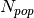
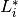
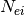
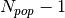
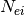
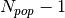
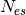
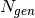

12.3. Genetic algorithm¶
Todo
Not finished.
The implementation of the GA can be divided into several blocks composed of operators, as shown in Fig. 12.5.

Fig. 12.5 Genetic algorithm work tree.
The first step consists in drawing a random initial population, that is a set of
 random models taken from  . This set is evaluated to
obtain the
. This set is evaluated to
obtain the  likelihood for each
likelihood for each  model via Eq. ?? and fed
to the GA loop as the starting generation.
model via Eq. ?? and fed
to the GA loop as the starting generation.
The selection block (in gray) contains the selection operator that picks
models to reproduce from the generation pool with a breeding probability given
by their ranked fitness (the rank-based fitness function associates higher
values with higher probabilities) and the encode operator which
translates the parameter values that define each chosen model into a binary
chromosome .
The breeding block (in green) pairs chromosomes randomly and produces a new generation via the crossover and mutation operators that combine each pair of parent chromosomes into two (theoretically fitter) offsprings.
The evaluation block (in red) is finally applied where each offspring
chromosome is decoded into a model, the best solutions from the
previous iteration added into this new generation by the elitism operator (to
ensure the fittest chromosomes are not lost) and the evaluation operator which
obtains the  values associated with this generation. Every
generation produces a “best solution” or fittest chromosome/model; we count the
number of times this solution remains unchanged throughout generations and store
it as  . If reaches a fixed value ,
the extinction/immigration operator is applied . This operator prevents the GA
from getting stuck in a local minima by discarding every chromosome but the
fittest one (extinction) and introducing  new random
chromosomes into the generation pool (immigration); the number of times this
operator is run consecutively is stored in
. If reaches a fixed value ,
the extinction/immigration operator is applied . This operator prevents the GA
from getting stuck in a local minima by discarding every chromosome but the
fittest one (extinction) and introducing  new random
chromosomes into the generation pool (immigration); the number of times this
operator is run consecutively is stored in  .
.
An exit switch is put in place to terminate the GA if no improvement on the
best solution found happened after  consecutive applications of
the extinction/immigration operator, i.e.: when  , in
which case the GA is forced to halt.
, in
which case the GA is forced to halt.
The GA iterates for a maximum of  generations unless the exit
switch forces a premature termination, in either case the result is the best fit
model found for  , the observed SC, represented by
, the observed SC, represented by
 . Every
variable involved in the GA process (e.g.: , ,
, etc.) can be modified via ASteCA‘s input data file.
. Every
variable involved in the GA process (e.g.: , ,
, etc.) can be modified via ASteCA‘s input data file.